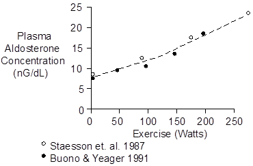
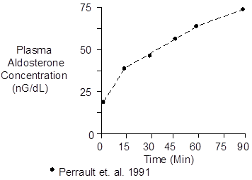

Exercise > Aldosterone
Plasma aldosterone concentration increases during exercise in response to adrenal zona glomerulosa stimulation by angiotensin II (see Renin And Angiotensin) and increased plasma K+ (see Potassium).

Concentration increases slowly for two reasons. First the angiotensin II stimulus increases slowly (see Renin And Angiotensin). Secondly, the aldosterone response involves increased aldosterone synthesis and this takes some time.
Aldosterone measurements made during short-term exercise (e.g., shown above) will probably not represent steady-state values.
Compare the magnitude of the response shown above with the magnitude shown below.
The data shown below were collected during upright cycling at 67% of maximum O2 uptake.

 Chemistry
Chemistry
Aldosterone has a molecular weight of 360.45. Composition is C21H28O5.
Aldosterone concentration in plasma is typically 12 nG/dL or 330 pMol/L.
Units
Popular units are nG/dL and pMol/L.
To convert nG/dL to pMol/L, multiply by 27.7.
References
Buono, M.J. and J.E. Yeager. Increases in aldosterone precede those of cortisol during graded exercise. J. Sports Med. Phys. Fitness 31:48-51, 1991.
Perrault, H., M. Cantin, G. Thibault, G.R. Brisson, G. Brisson and M. Beland. Plasma atriopeptin response to prolonged cycling in humans. J. Appl. Physiol. 70:979-987, 1991.
Staessen, J., R. Fagard, P. Hespel, R.Lijnen, L. Vanhees and A. Amery. Plasma renin system during exercise in normal men. J. Appl. Physiol. 63:188-194, 1987.